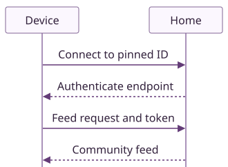

Connecting to a Home
Before your device can fetch a feed, it needs to know which Home to call and which community it can enter.
The first connection
An invitation carries the Home’s public endpoint ID, an address, a community and an access token. The device pins the identity and opens an encrypted Iroh connection. The Home uses the token to check membership for the requested community.

One request per stream
The current application protocol negotiates yappers/netkit/6. Each exchange uses one bidirectional QUIC stream. The caller writes a UTF-8 JSON request and finishes its sending side. The receiver reads to EOF, dispatches on type and sends a JSON response. Ordinary Netkit request and response documents are each capped at 1 MiB. The exchange has a 20-second deadline.
Three identities in one conversation
The transport endpoint identifies the machine at the other end. An account root authorizes devices. A device signing key identifies the writer of an event. A member token permits access to a community. An authenticated social operation also carries a device proof bound to the operation, Home and request context.
Direct and relayed routes
Native endpoints can connect directly or through an Iroh relay. The browser client uses a relay-enabled Home. A relay carries encrypted traffic. The enrolled Home stores community records and decides who can read or write them. Local development can use loopback-only transport.
Versions and refusals
The transport version and event format have separate lifetimes. Protocol 6 accepts new version-4 content events using its current signing domain. An explicit refusal returns a structured error. A dropped connection can leave a write’s outcome uncertain, so the client keeps the original signed event for retry.